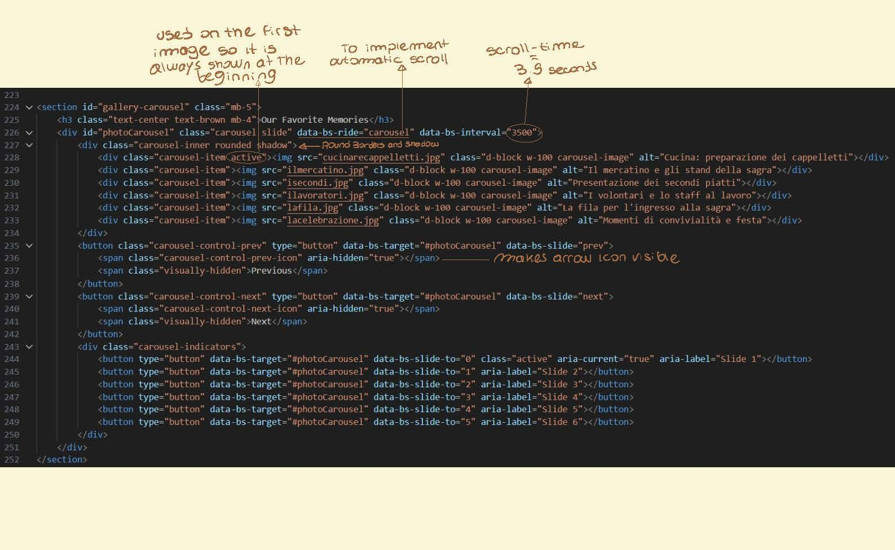
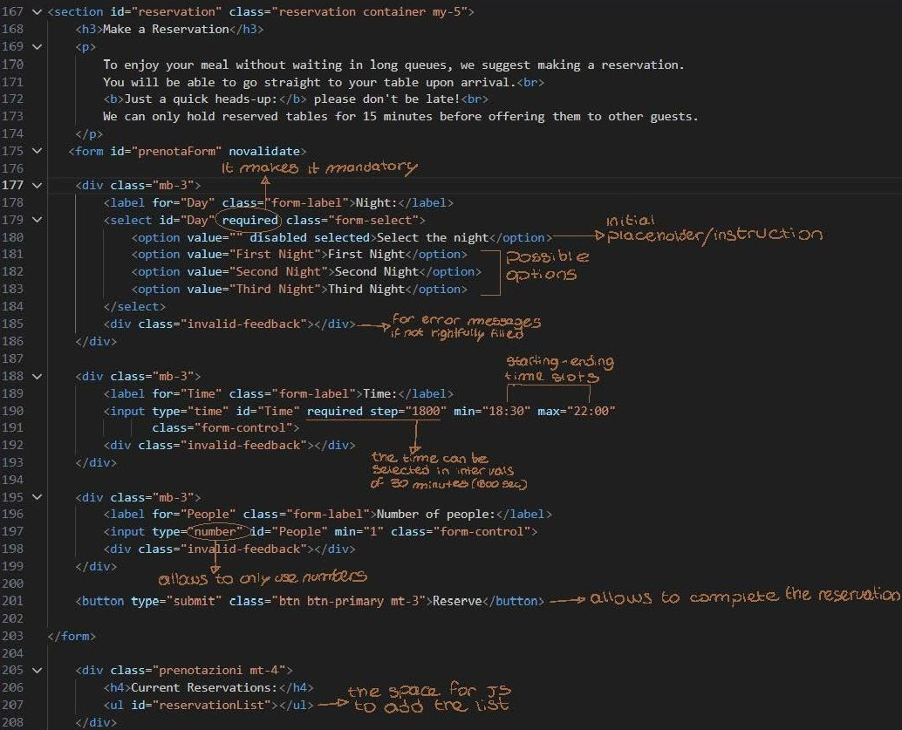
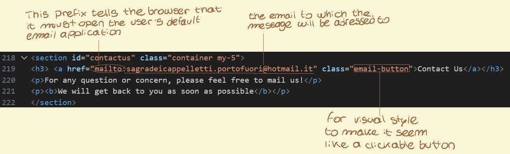
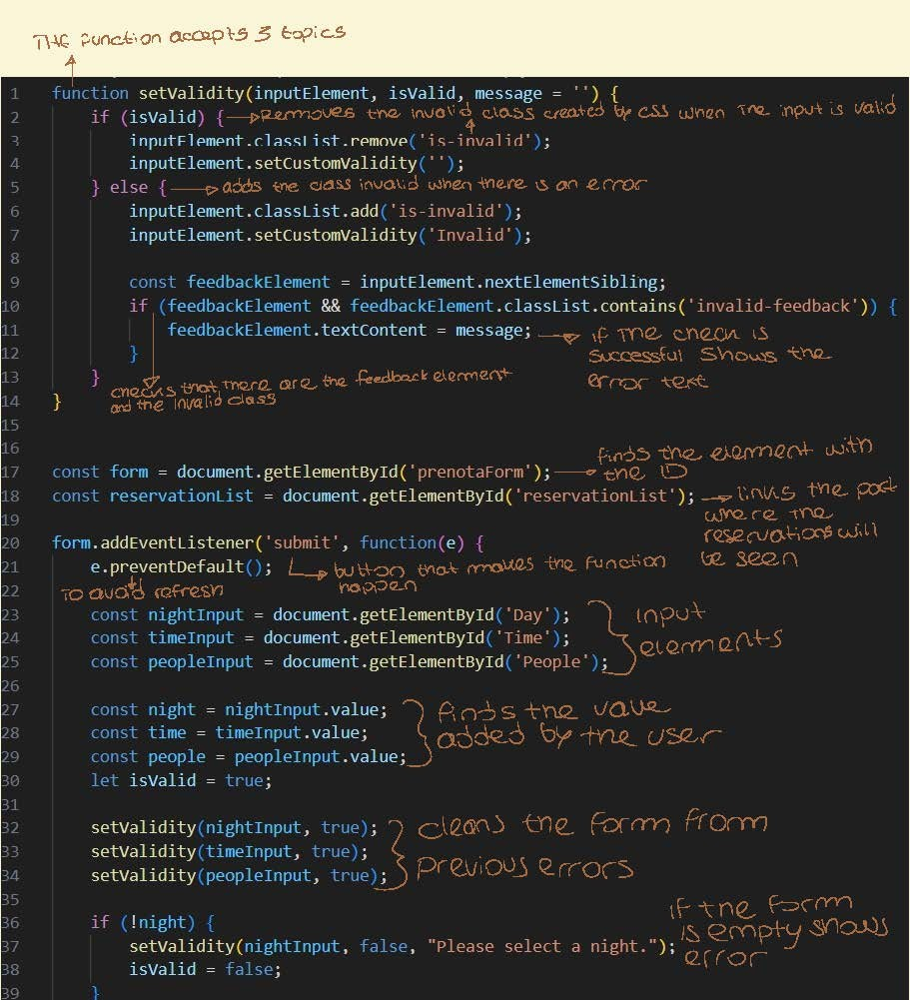
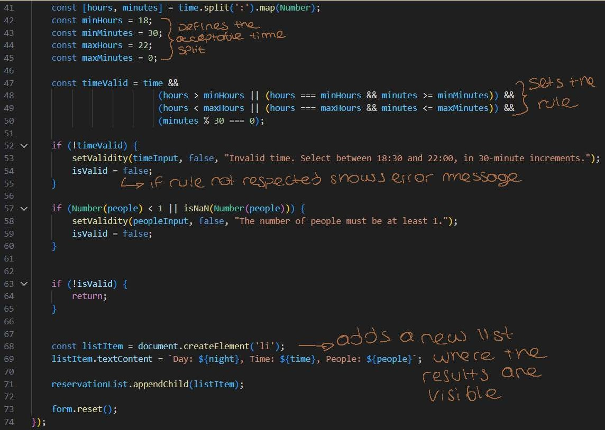

Exam Project Presentation: The ‘Sagra de Caplèt’ Website
Presenting the Idea: “Sagra de Caplèt”
The project is the official website for the “Sagra de Caplèt”, an annual gastronomic and cultural event held in Porto Fuori, Ravenna, Italy.
Project Goals
- Promotion: To attract visitors and promote the cultural significance of the Cappelletti dish and the Romagna culinary tradition.
- Information Hub: To provide essential details such as the event’s history, the menu, the volunteer team structure, location, and contact information.
- Booking Service: To offer a simple reservation form that allows visitors to book a table for a specific night and time, reducing queues and improving the on-site dining experience.
Key Features
- Cultural Focus: Dedicated sections explaining the history of cappelletti and the role of the Azdora (the traditional female head of the household).
- Visual Appeal: A photo carousel showcasing past event highlights.

- User Utility:
- An integrated reservation form: 
- User Utility:
- a clickable email link. 
Technology Used in Development
The website was built using a modern, responsive front-end stack, prioritizing user experience and a clean design.
Core Technologies
| Technology | Basic Description | Specific Project Functionality |
|---|---|---|
| HTML | Semantic Structure | Organization of navigation, sections, headers, and forms. |
| CSS | Styling/ Appearance | Definition of the Color
Palette (using :root CSS Variables), custom
typography, and hover effects. |
| JavaScript | Client-Side Interactivity | Validation Form (time check 18:30-22:00 and data), Dynamic reservation handling (non-persistent list), and Cookie Consent banner. |
Validation form


Cookie consent
Frameworks and Libraries
- Bootstrap: Served as the primary framework for creating a responsive and mobile-friendly layout. It was crucial for the navigation bar, grid system, forms, and the photo carousel.
- Font Awesome: Used to integrate high-quality icons, particularly for the social media links in the header and footer.
- Google Fonts: For custom fonts (Playfair Display for headers and Lato for body text) to enhance the site’s aesthetic.
Long-Term Plans and Future Development
While the current project is a complete and functional front-end solution, the long-term plan focuses on scaling the system and improving data management.
System Scalability
- Full Backend Integration: The most critical step is
to move the reservation system from client-side only to a fully
persistent model. This requires integrating the form with server-side
language and a database to:
- Store reservation data permanently.
- Manage table availability in real-time.
- Send automated confirmation emails to users.
- Admin Dashboard: Develop a secure administrative interface for event staff to manage reservations, update menu items, and track nightly attendance statistics.
User Experience Enhancements
- E-commerce Functionality: Implement a system to allow visitors to choose and purchase their menu of choice simplifying the on-site ordering process.
- Multilingual Support: Add functionality to offer the website content in other languages popular with tourists, such as German and French.
Lessons Learned in Development
The project provided practical experience in combining several technologies to meet a real-world objective.
Technical Takeaways
- Framework Synergy: Successfully integrating Bootstrap for fast prototyping and responsiveness while layering custom CSS for unique branding and visual effects demonstrated an efficient workflow.
- The Power of Variables: Utilizing CSS variables proved effective for quick theme adjustments, ensuring a consistent visual identity with minimal code changes.
- Accessibility and Navigation: Building a sticky navbar with smooth scrolling to relevant sections ensures all content is easily accessible and contributes to a professional, modern look.
Project Management Learning
- Understanding Limitation: Recognizing that the current reservation list is non-persistent helped define the clear path forward for future development (backend integration).